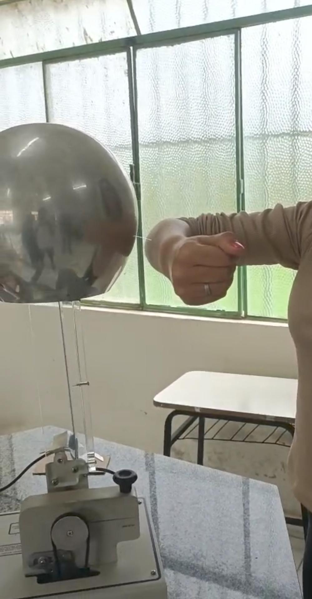
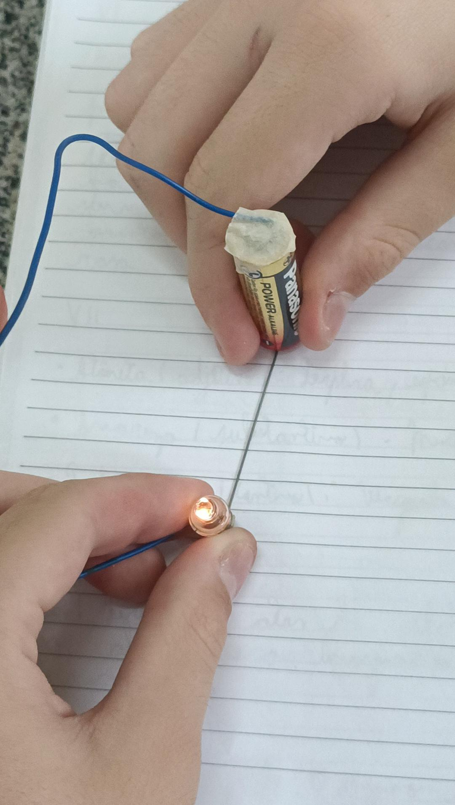

Gerador de Van de Graaff
|
 |
Nessa imagem é possível ver uma diferença de potencial entre uma pessoa e um gerador de Van de Graaff, onde a pessoa recebe um choque elétrico ao encostar no gerador, devido à diferença de potencial entre os dois. Tambem e possivel evitar o choque ultilizando luvas isolantes,sendo um dos materias de segurança que nao foi ultilizando , por nao ser necessario para o experimento. |
Sistema com grafite
|
 |
Esse experimento mostra que um grafite e um otimo condutor de eletricidade,isto e comprovado com a ultizaçao desse sistema que uma pilha gera energia eletrica e passando pelo grafite a energia e preservada dessa forma conseguindo acender a lampada no final do sistema, mostrando que o grafite e um bom condutor de eletricidade. |
Sistema com pulseira de prata

|
Nesse experimento assim como o experimento do grafite,queremos comprovar que a corrente de prata e um bom conutor de eletricidade,ultilizando o mesmo sistema, passando a energia pela corrente de prata e acendendo a lampada no final do sistema, mostrando que a corrente de prata e um bom condutor de eletricidade. |
sistema com um pedaço de isopor

|
Nesse experimento podemos comprovar que o pedaço de isopor e um pessimo condutor de eletricidade,pois ultilizando o mesmo sistema dos outros experimentos a luz no final nao e acendida por que os atomos nao conseguem passar livrimento pelo material |